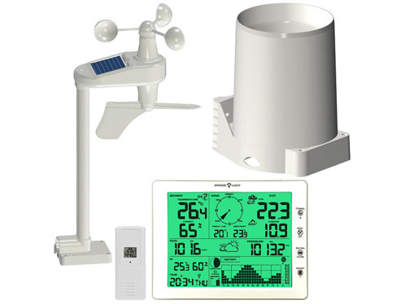

Station Météorologique
Cahier des Charges
- Programmation d'une station météorologique personnelle (Java)
- - Stockage et affichage de données météorologiques
- - Gestion d'une chaudière

Méthodes Choisies
- Affichage des Données
- - Tableau 2D (Matrice) : Création d'un tableau 2D pour afficher les données météo
- - Algorithme d'Activation : Écriture d'un algorithme pour activer des cases dans la matrice 2D, représentant des plages d'activité (jours et heures)
Mes compétences
- - Commenter le code de façon détaillée pour une meilleure compréhension
- - Expliquer clairement la structure et le fonctionnement du code
- - Développer des tests qui couvrent tous les cas d'utilisation pour garantir la qualité du logiciel
- - Améliorer l'interface utilisateur en mode texte pour une expérience utilisateur plus agréable
- - Planifier efficacement le temps pour chaque étape du projet pour une livraison dans les délais
- - Effectuer des révisions de code régulières pour identifier et corriger rapidement les erreurs